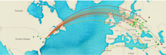

Putting Jewish Languages and Migrations on the Map
A cartographic initiative fostering a deeper understanding of the diversity and shared journeys of Jewish communities around the world

Explore the demo map
Bring this Project to Your Classroom or Community
We build personalized maps for any classroom, curriculum, or community. Contact us for details!
Contact UsAbout the Jewish Language Project
The Jewish Language Project raises awareness about Jewish ancestral diversity through the lens of language.
Learn More